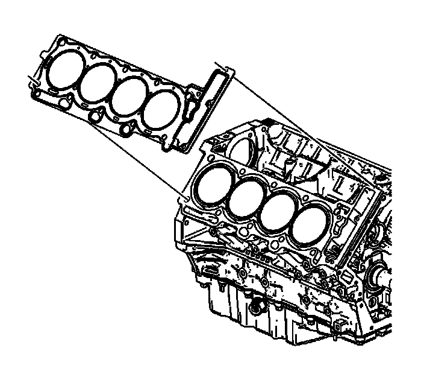
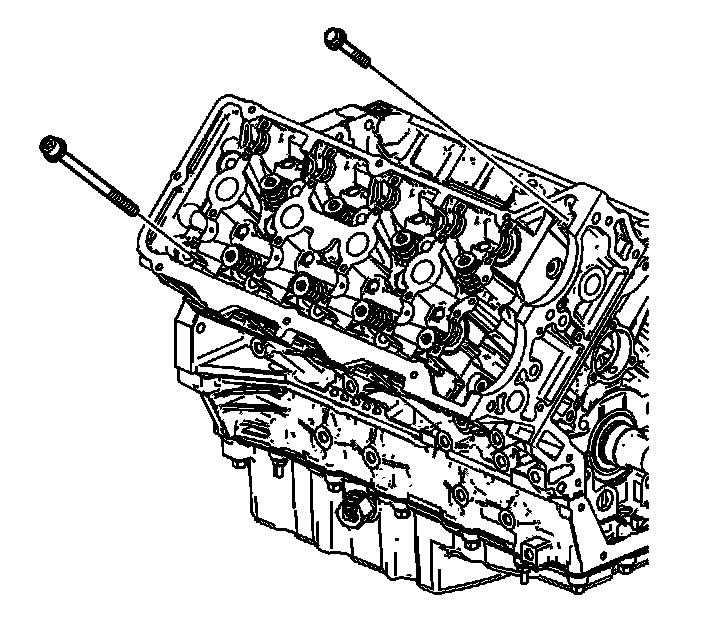

107. Cylinder Head Installation - Right Side
Cylinder Head Installation - Right Side
Tools Required
J 45059 Angle Meter

1. Ensure all the cylinder head locating pins are securely mounted in the cylinder block deck face.
Important: Failure to remove all the old thread sealant material from the cylinder block could cause false torque readings.
2. Ensure any old thread sealant material is removed from the cylinder head bolt holes in the cylinder block.
3. Install a new right cylinder head gasket using the deck face locating pins for retention.

4. Align the cylinder head with the deck face locating pins.
5. Place the cylinder head in position on the deck face.

Important: DO NOT reuse the old M11 cylinder head bolts.
6. Install new M11 cylinder head bolts in the cylinder head.
7. Install the M6 cylinder head bolts at the front of the cylinder head.
Right:

Notice: Refer to Fastener Notice (Fastener Notice) .
Notice: Ensure the cylinder head bolts that are being used are the proper pitch or engine damage will occur. The thread pitch on the M11 cylinder head bolts and the engine block cylinder head bolt holes have been revised. In order to prevent engine damage it is important to identify which thread pitch is being used. Cylinder head bolts with a pitch of 1.5 mm have a thread length of about 48 mm (1.890 in) long. Cylinder head bolts with a pitch of 2.0 mm have a thread length of about 67 mm (2.638 in) long.
8. Tighten the right cylinder head bolts in the sequence shown.
1. First Pass
Tighten the right cylinder head M11 cylinder head bolts to 30 N.m (22 lb ft) in the sequence shown.
2. Second Pass
Using the J 45059 , tighten the right cylinder head M11 cylinder head bolts an additional 60 degrees in the sequence shown.
3. Third Pass
Repeat the sequence turning each bolt another 60 degrees.
4. Final Pass
Repeat the sequence again turning each bolt a final 60 degrees, total 180 degrees.
9. Tighten the M6 bolts at the front of the cylinder head.
Tighten the M6 cylinder head bolts to 12 N.m (106 lb in).